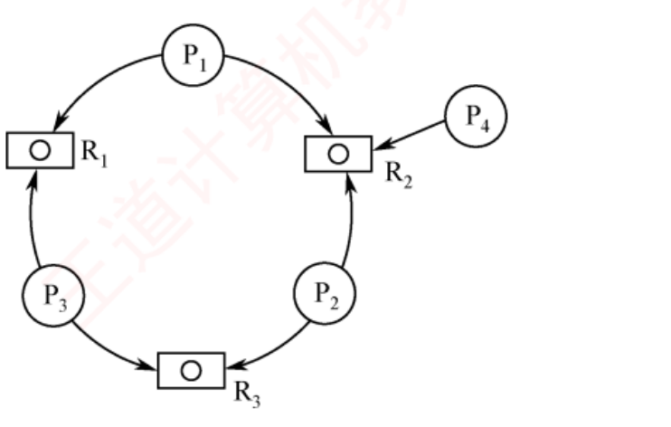

408
408先答旧题
生产者里 P(empty)、P(mutex) 反了会怎样？
读者写者里，谁来对 rw 做 P 和 V？
哲学家问题的三种解法？
死锁这一节内容很少：一个公式，一个算法，加上几组容易混的概念。
其之壹什么是死锁
一组进程都在等别人手里的东西，谁也走不了。例如 P1 持有 A 等 B，P2 持有 B 等 A。
原因：资源不够分，加上推进顺序不当（比如 PV 写反）。
四个必要条件（缺一不可）
① 互斥：资源不能共用。
② 不可剥夺：不能从别人手里抢。
③ 请求并保持：拿着一个，还要别的。
④ 循环等待：等待关系成环。
三组容易混的词
有环不一定死锁：每类资源有多个时，环只是必要条件。每类只有一个时才等价。 不安全状态不一定死锁：只是可能进入死锁。死锁一定不安全。 饥饿不是死锁：饥饿可以只有一个进程长期等（且它可能在就绪态）；死锁至少两个，且都阻塞。
其之貳资源够不够：一个公式
n 个进程，每个最多要 k 个同类资源，一共 m 个。怎样才一定不死锁？
想最坏的情况：每人手里都拿了 k−1 个，就差一个，这时一共发出去 n(k−1) 个。只要再多 1 个，就有人能拿够，他做完释放后，其他人也都能走。
不死锁公式
m > n(k−1) ⟺ 一定不死锁。
需求各不相同（kᵢ）时：m > Σ(kᵢ − 1)，也就是 m ≥ Σkᵢ − n + 1。
代入：n=3，k=4。n(k−1) = 9，所以 m ≥ 10 才一定不死锁。m=9 时，每人恰好 3 个，都差一个，就是死锁。
严格大于
等号成立时恰好是死锁局面。不要写成大于等于。
其之參四种应对
| 策略 | 做法 | 代价 |
|---|---|---|
| 预防 | 破坏四条件之一 | 严格，资源利用率低 |
| 避免 | 动态判断，不进入不安全状态（银行家） | 要知道最大需求 |
| 检测与解除 | 允许发生，事后处理 | 检测开销 |
| 鸵鸟 | 不管（常见的通用系统） |
预防：破坏哪一条
互斥：把资源改造成可共享（如 SPOOLing）。多数资源做不到。
不可剥夺：申请失败就放弃已有的。适合 CPU、内存这种能保存现场的，不适合打印机。
请求并保持：一次申请全部（静态分配）。资源浪费，可能饥饿。
循环等待：资源编号，按编号递增申请。编号不便改动，加设备麻烦。
合上页面说一遍：四条件分别对应什么预防方法？
互斥→改共享；不可剥夺→申请失败放弃已有；请求并保持→一次申请全部；循环等待→按序申请。
其之肆避免：银行家算法
预防太严。避免是分配前先算一下：这次分了之后，系统是不是还安全。
安全状态：存在一个顺序（安全序列），让所有进程都能依次拿够并完成。
贷款给你我要算账
银行家手里有一笔钱。答应客户前先算：借了以后，还能不能找到一个顺序，让所有客户都拿够钱、做完项目、把钱还回来？能就借，否则让他等。比方的局限：这里的客户保证事先声明最大需求，真实系统很难知道。
四步
① 检查 Request ≤ Need，否则出错（超过声明）。
② 检查 Request ≤ Available，否则等待（不用查安全性）。
③ 试探分配：Available −= Request，Allocation += Request，Need −= Request。
④ 安全性算法：Work = Available，反复找 Need ≤ Work 的进程，让它跑完，Work += Allocation。全部能跑完才安全；不安全就回滚，让它等。
最容易错的一步
进程跑完之后，Work += Allocation，也就是它手上已有的，不是加 Max。它得到 Need 再连本带利还回来，净增加的只是原来的 Allocation。
提速：集合推进法。 不用纠结先选谁。能满足的进程全部合入，只要有一个合得进去，Work 就只增不减。推到天花板还有人满足不了，就判不安全。
| 进程 | Max | Allocation | Need |
|---|---|---|---|
| P0 | 7 5 3 | 0 1 0 | 7 4 3 |
| P1 | 3 2 2 | 2 0 0 | 1 2 2 |
| P2 | 9 0 2 | 3 0 2 | 6 0 0 |
| P3 | 2 2 2 | 2 1 1 | 0 1 1 |
| P4 | 4 3 3 | 0 0 2 | 4 3 1 |
Available = 3 3 2
| Work | 满足谁 | Need | 完成后 Work += Allocation |
|---|---|---|---|
| 3 3 2 | P1 | 1 2 2 | 5 3 2 |
| Work | 满足谁 | Need | 完成后 Work += Allocation |
|---|---|---|---|
| 5 3 2 | P3 | 0 1 1 | 7 4 3 |
| Work | 满足谁 | Need | 完成后 Work += Allocation |
|---|---|---|---|
| 7 4 3 | P0 | 7 4 3 | 7 5 3 |
| Work | 满足谁 | Need | 完成后 Work += Allocation |
|---|---|---|---|
| 7 5 3 | P2 | 6 0 0 | 10 5 5 |
| Work | 满足谁 | Need | 完成后 Work += Allocation |
|---|---|---|---|
| 10 5 5 | P4 | 4 3 1 | 10 5 7 |
合上页面说一遍：银行家四步说一遍。第二步不过时，要不要查安全性？
Request≤Need；Request≤Available；试探分配；安全性算法。第二步不过就直接等待，不用查安全性。
其之伍检测与解除
允许死锁发生，定期检查。
资源分配图：进程和资源都是顶点。请求边 P→R，分配边 R→P。
化简：找一个不阻塞的进程（它要的资源都能满足），想象它跑完并释放资源，去掉它所有的边。重复。
死锁定理
图能完全简化（所有边都去掉）⟺ 没有死锁。化简后还有边的进程，就是死锁进程。
化简和拓扑排序思路相同：不断去掉可以进行的结点。检测算法也和安全性算法几乎一样，只是把 Need 换成当前的 Request。
解除：资源剥夺（挂起一些进程，抢它的资源）；撤销进程；进程回退（退到不需要那个资源的检查点）。
领域展开
四条件：互斥、不可剥夺、请求并保持、循环等待。
公式：m > n(k−1)；严格大于。
银行家：Request≤Need，≤Available，试探，安全性；Work += Allocation。
不安全 ≠ 死锁；有环 ≠ 死锁。
其之陸实战
再深一层
正反两问一张表（考场上先判自己在哪一边）： 不会死锁 ⟺ m > n(k−1) 问 m 最少 / n 最多 可能死锁 ⟺ m ≤ n(k−1) 问 n 最少（本题） 本题 m=8、k=3：8 ≤ K×2 ⟹ K ≥ 4 ⟹ 最小 K = 4 验 K=3：3×2 = 6 < 8 ⟹ 发完 6 台还剩 2 台 ⟹ 必有人凑齐 ✗ 验 K=4：4×2 = 8 = 8 ⟹ 人人 2 台、一台不剩 ⟹ 全卡住 ✓⚠️⚠️ 等号归哪一边，是这类题唯一的失分点：m = n(k−1) 时（本题 8 = 8）恰好人人差 1、资源发光 ⟹ 算「可能死锁」。所以「不死锁」要求严格大于，「可能死锁」含等号。记混就会答 3 或 5。
⭐ 书上点名这是鸽巢原理：「8 个球放进 K 个盒子，每盒最多 2 个」——K ≥ 4 才装得下，这是 408 里少数几处直接用到组合数学思想的地方。
🔗 本考点在 2009 / 2014 / 2021 三年考过，加上教材 5 道，本节共 9 次——三种问法（问 m / 问 n / 反问可能死锁）都要会。
再深一层
通用写法（背这一条就够，等需求只是特例）： 不死锁 ⟺ m > Σ(kᵢ − 1) = Σkᵢ − 进程数 本题 Σ(kᵢ−1) = 2 + 3 + 4 = 9 ⟹ m > 9 ⟹ 最小 m = 10 m=9 的死锁现场：(2, 3, 4) 人人差 1，一台不剩 m=10：多出的 1 台给谁，谁就凑齐 ⟹ 跑完释放 ⟹ 全解⚠️ 别把三个需求加起来算成 3+4+5 = 12（选项 D 就在等这个错）：要减去「每人差的那 1 个」——公式减的是进程个数，不是别的。
⭐ 与 2.4-31 的 Σkᵢ < m + n 是同一条式子的两种移项：m > Σkᵢ − n ⟺ Σkᵢ < m + n。本题问最小 m，那道问 Σkᵢ 的界，会一条就够。
🐍 复算：n=9 时确实存在 (2,3,4) 的卡死分配；n=10 时穷举全部分配无卡死 ⟹ 最小 10。

再深一层
先看每个进程要哪两类资源（每类只有 1 个实例）： P₁ : R₁ R₂ P₂ : R₂ R₃ P₃ : R₁ R₃ P₄ : R₂ 能不能只有 2 个进程成环？要成环需两人「你占我要的、我占你要的」： P₁ 与 P₂ 只共用 R₂ 一类 ⟹ 一个占了另一个等，另一半凑不齐 P₁ 与 P₃ 只共用 R₁；P₂ 与 P₃ 只共用 R₃ ⟹ 同理 ⟹ 任意两人只共享一类资源 ⟹ 两进程环不可能 ⟹ 排除 A、B 三个进程：P₁ 持 R₁ 等 R₂、P₂ 持 R₂ 等 R₃、P₃ 持 R₃ 等 R₁ ⟹ 环闭合 ✓ ⟹ 死锁进程数下界 = 3⭐⭐ 「两个进程为什么成不了环」是本题的真正难点：单实例资源下，两进程成环要求它们共享两类资源（各占一类、各等一类）；本题任意两个进程的需求集合交集都只有一个元素，所以最小的环长是 3。
⚠️ D（4）错在把「至少」读成了「最多」：P₄ 只要 R₂，若它早就拿到 R₂ 并跑完，环里就只有三个人；题目问下界，就要构造「最少的人被卡住」的场景。
📌 解这类题的通法：把「谁要哪些资源」列成集合，两两求交集——交集大小 ≥ 2 才可能出现两进程环，否则环长至少 3。
Ⅰ. S₁ 会限制用户申请资源的顺序，而 S₂ 不会
Ⅱ. S₁ 需要进程运行所需的资源总量信息，而 S₂ 不需要
Ⅲ. S₁ 不会给可能导致死锁的进程分配资源，而 S₂ 会
再深一层
三类策略的三栏对照（本题的标准答案就在表里）：
预防 避免(S₁) 检测(S₂)
限制申请顺序 会 不会 不会
需预知最大需求 不需要 需要(Max) 不需要
何时判断 事前立规矩 每次分配前算 事后查图
可能导致死锁的请求 — 不给 照给⚠️⚠️ 说法Ⅰ的错法值得单独记住：它把预防的特征安到了避免头上。「限制申请顺序」＝资源有序分配法＝死锁预防（2.4-11），银行家算法从不规定你按什么顺序申请，它只在每次申请时算一次安全性。⭐ 书上补了一句非常关键的话：「安全序列并不是唯一的，也不是固定的，它只是一种可能的分配方案，而不是必须遵循的规则」——很多人误以为算出安全序列后系统就得按那个顺序跑，其实它只是一份「存在性证明」：证明「最坏情况下也能收场」，实际调度完全可以是别的顺序。
🔗 说法Ⅲ的「S₂ 会」呼应 2.4.1 节表 2.5：检测策略的资源分配是「宽松，只要有就分配」，代价是可能真的死锁，然后靠解除手段收拾。
| 进程 | 已分配 (R₁ R₂ R₃) | 尚需分配 (R₁ R₂ R₃) | 可用 (R₁ R₂ R₃) |
|---|---|---|---|
| P₁ | 2 0 0 | 0 0 1 | 0 2 1 |
| P₂ | 1 2 0 | 1 3 2 | |
| P₃ | 0 1 1 | 1 3 1 | |
| P₄ | 0 0 1 | 2 0 0 |
再深一层
四个选项都以 P₁ 打头 ⟹ 直接从 P₁ 推起：
Work = (0,2,1)；P₁ 需 (0,0,1) ≤ Work ✓ 唯一能起步的
P₁ 完成 → Work += (2,0,0) = (2,2,1)
P₂ 需 (1,3,2)：B 分量 3 > 2 ✗
P₃ 需 (1,3,1)：B 分量 3 > 2 ✗ ⟹ 排除 A、B
P₄ 需 (2,0,0) ≤ (2,2,1) ✓
P₄ 完成 → Work += (0,0,1) = (2,2,2)
P₂ 与 P₃ 的 B 分量都要 3，而 Work 的 B 永远停在 2 ⟹ 全卡⭐⭐ 本题的真正题眼是 R₂ 这一列：P₂ 与 P₃ 都要 3 个 R₂，而系统里 R₂ 的总量 = 0+2+1+0（已分配）+ 2（可用）= 5，但这 5 个里有 2 个卡在 P₂、P₃ 自己手上——它们俩谁也凑不出 3 个。看出「某一列永远填不满」就能一眼判定不安全，比逐个推快得多。⚠️ 选项以 P₁ 开头是命题人给的提示，也是陷阱：三个选项都从 P₁ 起步，容易让人以为「总有一条能走通」；安全序列不存在时，D 才是答案——别因为「四选一总得选个序列」而硬凑。
🐍 复算：安全序列数 = 0（DFS 枚举全部排列，无一条能走完）。
再深一层
列表（单列资源，Need = 需要 − 已申请）：
需要 已分配 Need
P₁ 4 2 2
P₂ 3 1 2
P₃ 1 0 1
Available = 4 − (2+1+0) = 1
推进：Work=1 只够 P₃(Need 1) ⟹ P₃ 完成，归还它的 Allocation = 0
Work 仍 = 1 < 2 ⟹ P₁、P₂ 都推不动 ⟹ 不安全⚠️⚠️ 本题最容易错的一步：P₃ 完成后归还多少——它归还的是已分配量 Allocation = 0，不是它的最大需求 1！很多人写成「P₃ 跑完释放 1 个 ⟹ Work 变成 2 ⟹ 能推 P₁」，于是错选 C。事实是：P₃ 先借走那 1 个，用完还回来，Work 又变回 1，一分没多。⭐ 安全性算法里 Work += Allocation[i]，永远是「已分配」那一列，这是全章最高频的低级错误，写表时把这一列圈出来。
🐍 复算：安全序列数 = 0，与书答一致。
| 进程 | 已分配 (R₁ R₂ R₃) | 资源最大需求 (R₁ R₂ R₃) |
|---|---|---|
| P₀ | 3 2 3 | 5 5 10 |
| P₁ | 4 0 3 | 5 3 6 |
| P₂ | 4 0 5 | 4 0 11 |
| P₃ | 2 0 4 | 4 2 5 |
| P₄ | 3 1 4 | 4 2 4 |
再深一层
第一步（漏了就全错）：
已分配列和 R₁: 3+4+4+2+3 = 16 R₂: 2+0+0+0+1 = 3
R₃: 3+3+5+4+4 = 19
Available = (18,6,22) − (16,3,19) = (2, 3, 3)
第二步 Need = Max − Allocation：
P₀ 2 3 7 P₁ 1 3 3 P₂ 0 0 6 P₃ 2 2 1 P₄ 1 1 0
验 D：(2,3,3) ≥ P₃(2,2,1) ✓ → +Alloc₃ = (4,3,7)
≥ P₄(1,1,0) ✓ → (7,4,11) ≥ P₂(0,0,6) ✓ → (11,4,16)
≥ P₁(1,3,3) ✓ → (15,4,19) ≥ P₀(2,3,7) ✓ → 全部完成⭐ 四个选项的排除都发生在第一步，这是最省时的查法：A 以 P₀ 起步：Need₀ = (2,3,7)，R₃ 要 7 > 3 ✗；B 以 P₁ 起步：(1,3,3) ≤ (2,3,3) ✓ 但第二个 P₀ 就卡住；C 以 P₂ 起步：(0,0,6)，R₃ 要 6 > 3 ✗。先用 Available 筛掉「第一个进程就不满足」的选项，本题一下去掉两个。🐍 复算：这个状态一共有 66 条安全序列，而四个选项里只有 D 在其中——安全序列多得很，但命题人给的另外三条恰好都不在；这也提醒：题目问「存在的一个安全序列」，不是「唯一的」。
再深一层
逐项体检： A 预防 vs 避免 银行家属避免（不立规矩，只算安全）✗ B 安全 ⟹ 无死锁 三条蕴含之一，成立 ✓ C 不安全 ⟹ 死锁 方向反了，不安全只是「可能」 ✗ D 破坏哪个条件 银行家一个条件都不破 ✗⚠️⚠️ D 是四项里最有迷惑性的：「它不给你分配」听起来很像在破坏「请求并保持」，但破坏条件是预防的做法（规定你必须一次要齐）；银行家允许你随时零星申请，只是这一次可能让你等——申请规则没有任何改变。
⭐ C 与 2.4-17 的同心椭圆图是同一件事：{死锁} ⊊ {不安全}——不安全只是「可能滑向死锁」，进程若不把最大需求提完就永远不会卡住。
🔗 与 2019 真题（2.4-42）说法Ⅲ配对：那道考「银行家能否判断系统是否处于死锁」（不能，那是检测的活），本题考「银行家属于哪一类」（避免）——银行家的边界被真题从两头考了个遍。
Ⅰ. 可以通过剥夺进程资源解除死锁
Ⅱ. 死锁的预防方法能确保系统不发生死锁
Ⅲ. 银行家算法可以判断系统是否处于死锁状态
Ⅳ. 当系统出现死锁时，必然有两个或两个以上的进程处于阻塞态
再深一层
四说法归位： Ⅰ 剥夺资源解除死锁 2.4.4 解除三法之一 ✓ Ⅱ 预防能确保不发生 2.4.2 破坏必要条件 ✓ Ⅲ 银行家判断是否已死锁 ✗ 那是检测（化简图）的活 Ⅳ 死锁 ⟹ ≥2 个进程阻塞 与 2.4-01 同一条分界线 ✓⚠️⚠️ 三个「算法/方法」的能力边界，一次分清（Ⅲ 就死在这里）：银行家算法回答「这次分配会不会让系统变得不安全」（未来时）；资源分配图化简回答「系统现在是不是已经死锁了」（现在时）。银行家算法根本不看「谁在等谁」，它只看 Need 与 Available，问不出死锁。
⭐ Ⅱ 里的「确保」二字值得注意：预防是把条件整个破掉，所以是绝对保证——这与避免的「每次算一算」不同，也正是预防「保守、利用率低」的代价来源（表 2.5）。
🔗 Ⅲ 与 2013 真题（2.4-37）A 项互补：一个考「银行家不是预防」，一个考「银行家不是检测」，两头都堵上，银行家就只剩「避免」这一个身份了。
做完再翻：这些题到底在问什么
这一节全是选择题，只有两样：公式和算法。
公式题全在等号上设坑：「可能死锁的最小 K」和「确保不死锁的最小 m」差着严格大于的那个 1。
安全序列题先算 Available（总数 − 已分配），用集合推进法直接推。
概念题：不安全 ≠ 死锁；限制申请顺序属于预防，不是避免；银行家判断的是安全，不是死锁。